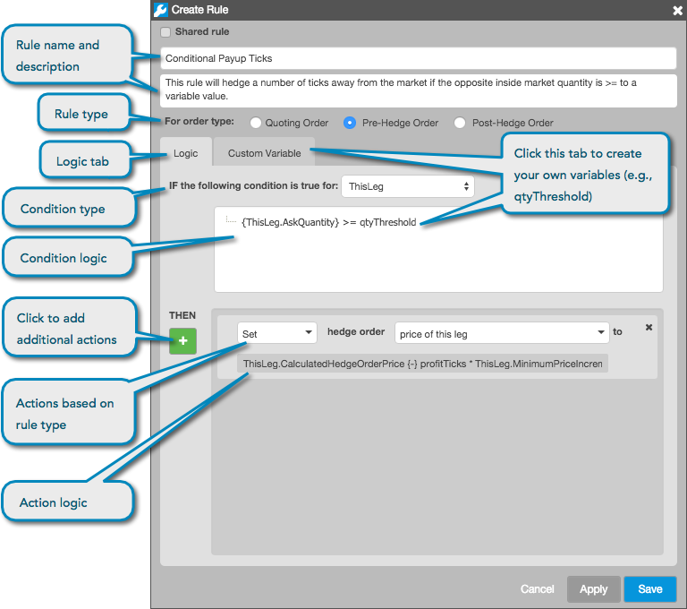

Click Create Rule from the Autospreader® Rules widget to begin creating a rule. You can also open the Autospreader Rules Create Rule screen in Autospreader by clicking the "+" in the Rules field.

The Autopsreader Rules Configuration interface consists of the following:
- Rule name — Sets the rule name that appears in the Autospreader Rules Manager.
- Rule description — Sets the rule description that appears in the Autospreader Rules Manager.
- For order type — Sets which type of order the rule is applied to. One of the following can be selected per rule:
- Quoting Order
- Pre-Hedge Order
- Post-Hedge Order
- Logic — A tab used for setting the type of condition and condition logic for executing
the rule. This tab is also used for setting the type of action to take on the order type based on the conditions.
- Custom Variable — A tab used for creating variables that can be used in the rule conditions and actions.